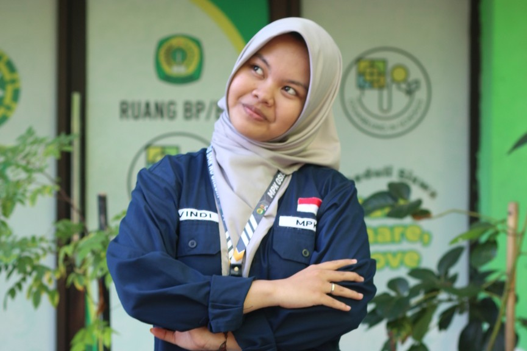
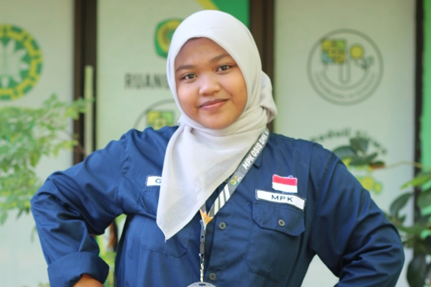
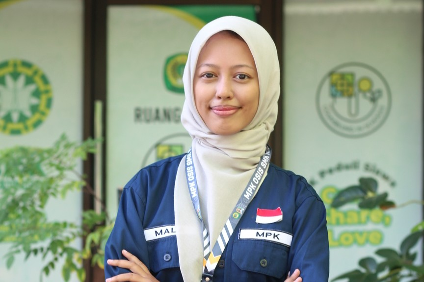
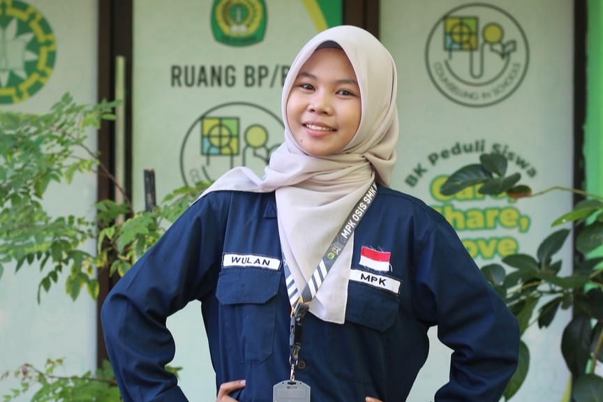
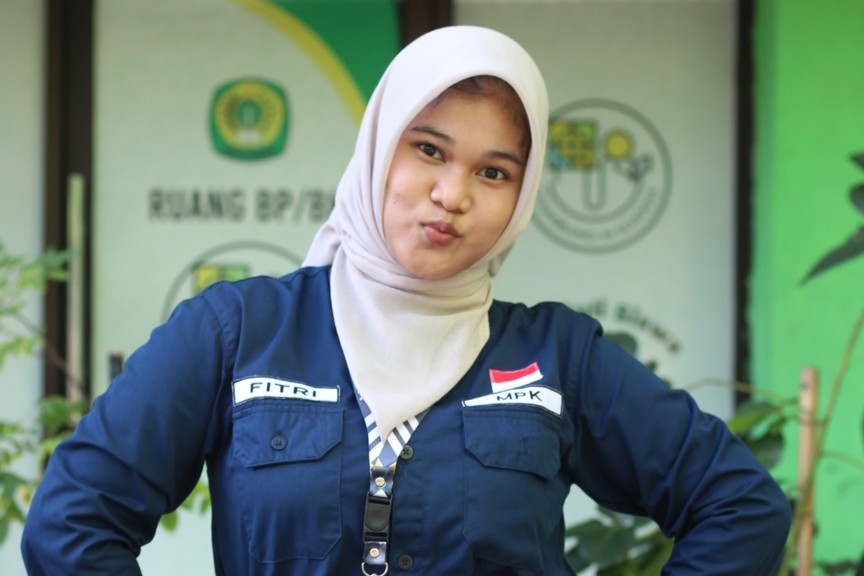
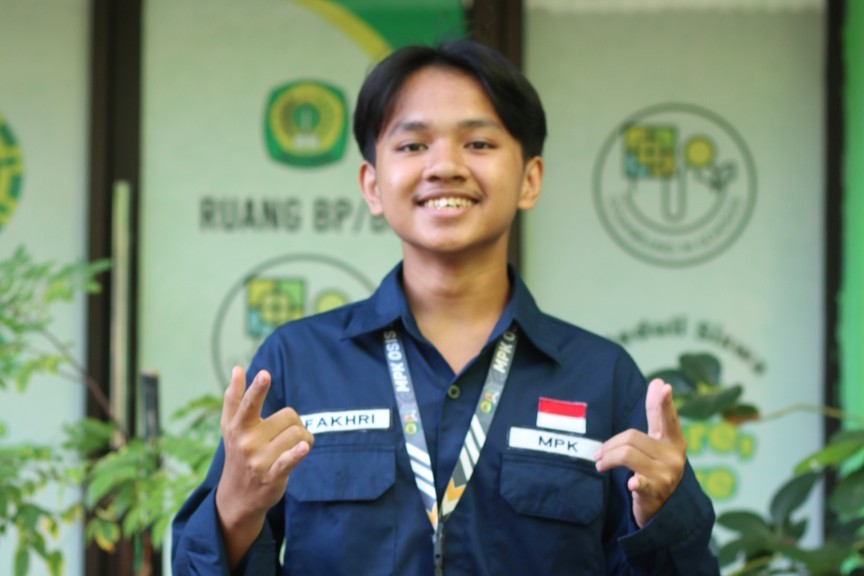
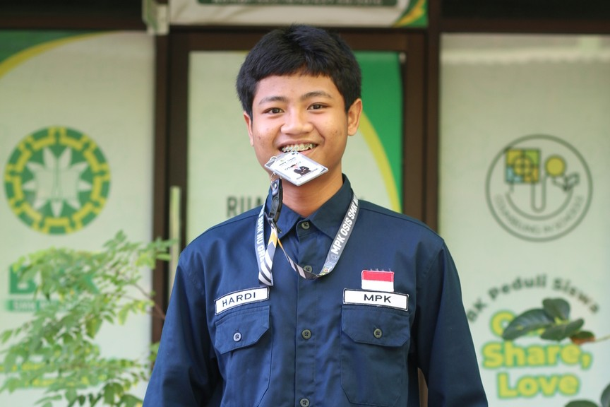

Mochammad Ghufron, S.Pd.I, M.Pd.
Koordinator Pembina OSIS








MPK adalah suatu organisasi di sekolah yang bertugas mengawasi kinerja OSIS dalam menjalankan tugas-tugasnya selama masa jabatannya berlangsung. Jabatan MPK setara dengan OSIS namun memiliki tugas yang berbeda. MPK adalah lembaga legislatif sedangkan OSIS adalah eksekutif.
Dimana setiap anggota mpk wajib memiliki catatan pelanggaran sekbid masing-masing, yang berisi bukti dan keterangan serta catatan ini bersifat rahasia. Catatan ini hanya bisa dibicarakan dalam 2 keadaan, yakni rapat bulanan MPK dan Rapat 3 bulan.
Rapat ini bertujuan untuk merundingkan dan mencari solusi guna menyelesaikan sebuah masalah dari masing masing sekbid, segala masalah didalam rapat ini tidak boleh didengar diluar bersifat rahasia guna mengantisipasi penambahan masalah.
Ruang Aspirasi merupakan sebuah program kerja hasil kolaborasi antara MPK dengan BK. Proker ini bertujuan untuk menampung dan menyuarakan aspirasi dari murid-murid SMK NU Gresik, serta Bapak/Ibu Guru dengan menggunakan google formulir, sehingga hasil dari aspirasi tersebut bisa disampaikan oleh panitia ke pihak yang bersangkutan. Didalam google form berisi tentang kritik dan saran bagi SMK NU Gresik serta MPK-OSIS SMK NU Gresik. Sehingga dapat menjadikan SMK NU Gresik dan MPK-OSIS SMK NU Gresik lebih baik dan terus berkembang.
• Rapat yang membahas Rencangan program kerja yang akan dilaksanakan dalam 1 periode, dimana tempat untuk berunding program kerja antar lingkup sekbid maupun antar sekbid guna kolaborasi. Selain itu rapat ini membahas dan merancang aturan mpk osis smk nu gresik yang akan ditaati dalam 1 periode ini, dengan hasil kesepakatan bersama.
• Rapat yang membahas seluruh evaluasi baik program kerja dan evaluasi dari hasil catatan MPK, guna menjadikan periode selanjutnya untuk lebih baik.